Штампање и генерисање ПДФ документа¶
Теме овог часа су:
приказивање броја у облику процента,
рад са ћелијама табеле (приказивање веће количине текста у ћелији, спајање ћелија)
штампање документа
генерисање ПДФ документа
Пример: Реке Србије – проценти и рад са ћелијама табеле¶
Корак 1. Са следећег линка RekeSrbije.xlsx преузми документ RekeSrbije.xlsx која садржи податке о најдужим рекама у Србији и сними га на свој рачунар.
Покрени Ексел и отвори документ:
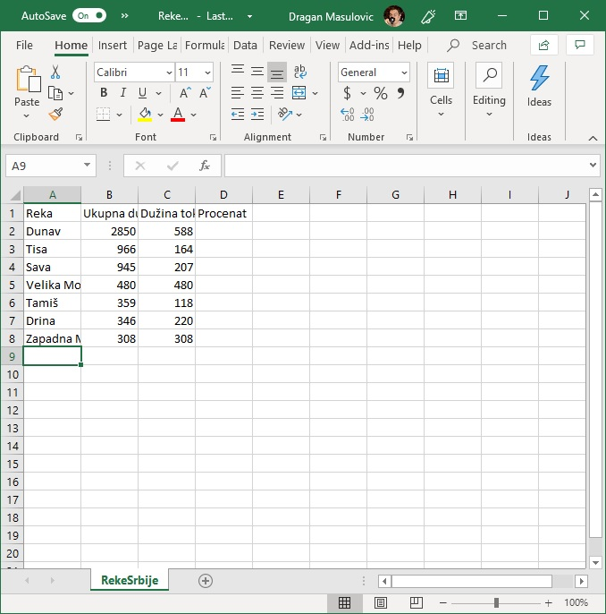{kind=link}
Проширивање врсте и приказивање садржаја ћелије у више редова¶
Корак 2. Прошири колоне тако да се у потпуности види садржај ћелија:
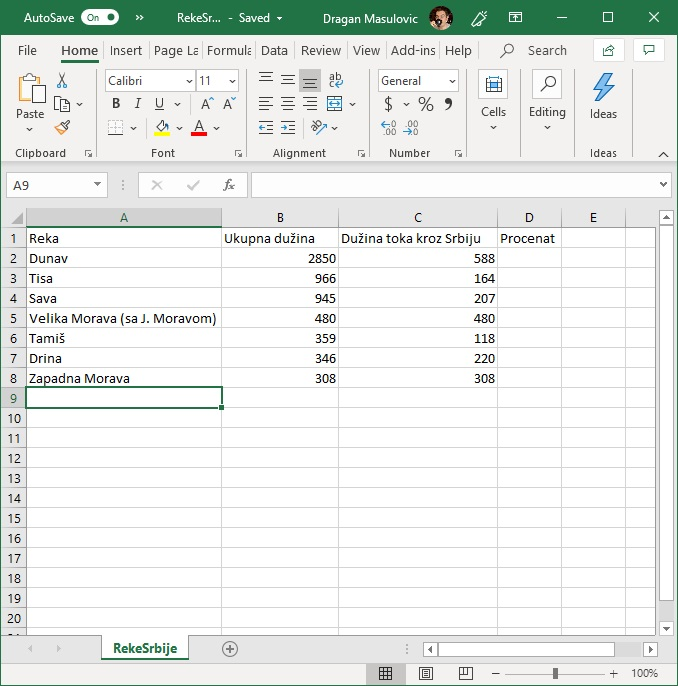{kind=link}
Табела је ружна зато што је, рецимо, име колоне C дугачко, а бројеви који су уписани у ту колону су релативно мали. Има много празног простора и то отежава читање.
Зато ћемо табелу форматирати другачије.
Корак 3. Сузи колоне B и C и прошири прву врсту. Да бу проширио прву врсту „ухвати” мишем границу између бројева 1 и 2

и повуци наниже:
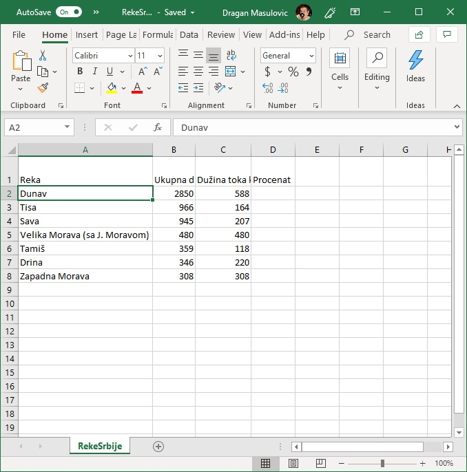{kind=link}
И даље се текст не види у целости: Ексел, наиме, неће сам од себе „смотати текст” у два реда чак и када је ћелија довољно висока. Морамо му наредити да то уради. Селектуј ћелије B1 и C1, па онда кликни на икону која одговара операцији „Wrap Text” (енгл. „смотај текст”):
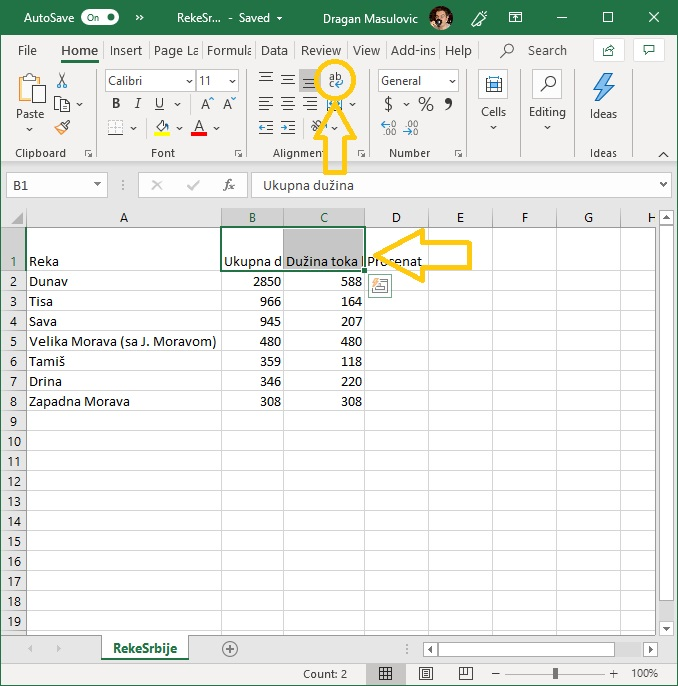{kind=link}
Табела сада изгледа овако:

Приказивање бројева у облику процента¶
Корак 4. Сада ћемо за сваку од река на списку израчунати који проценат њеног тока пролази кроз Србију. Да се подсетимо: реч проценaт потиче од латинског pro centum што значи „у стотини”. Зато је
На пример, у једној школи која има 856 ученика њих 25% су одлични. Колико има одличних ученика у тој школи?
Одговор. У тој школи има 214 одличних ученика јер је
Дунав је дугачак 2850 км, од чега 588 км протиче кроз Србију. Који проценат свог тока Дунав проводи у Србији?
Одговор. Нека је то \(x\%\). Онда је
Одатле се лако добија да је
Дакле, приближно \(20,63\%\) свог тока Дунав проводи у Србији.
Проценат, дакле, представља количник дела и целине, помножен са 100. Да бисмо у Екселу израчунали проценте, довољно је израчунати количник дела и целине, и тако добијене бројеве форматирати као проценат.
Да кренемо са послом. У ћелију D2 унесемо формулу
=C2/B2
што значи да рачунамо количник дела и целине (удео тока кроз Србију у целом току Дунава):
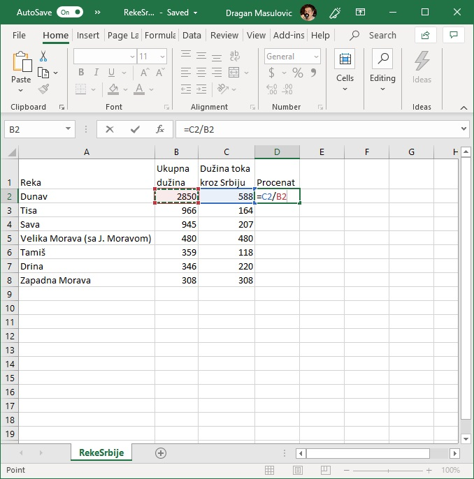{kind=link}
Исто урадимо и за остале реке у табели. Добијамо:

Да бисмо ове количнике приказали као проценте селектоваћемо ћелије D2:D8, кликнути на стрелицу поред формата податка и одабрати „Percentage”:

Добијамо количнике форматиране као проценте, на две децимале:

Спајање ћелија и промена величине слова¶
Корак 5. У овом кораку ћемо табели додати наслов „Najduže reke Srbije”. Како у табели нема места за наслов, убацићемо празну врсту пре прве врсте табеле.
Кликни десним тастером миша на број 1 (редни број прве врсте), па у малом менију који се појавио одабери „Insert”:

Испред прве врсте се појавила нова, празна врста:
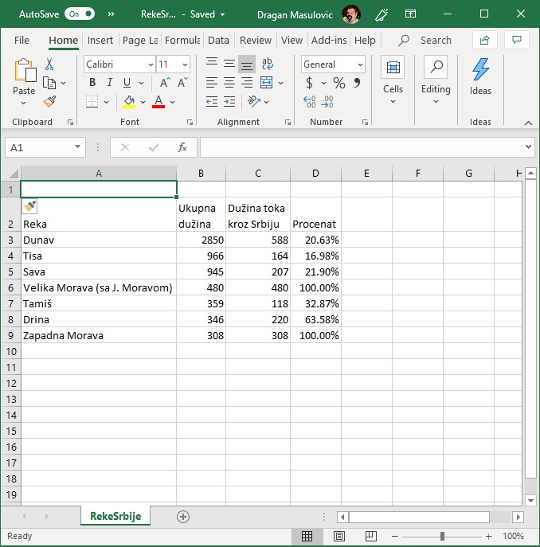{kind=link}
Пошто желимо да додамо наслов за целу табелу спојићемо ћелије A1, B1, C1 и D1 у једну велику ћелију. Селектуј ћелије A1:D1 и кликни на икону која представља операцију „Merge Cells” (енгл. „спој ћелије”):

Добијамо:
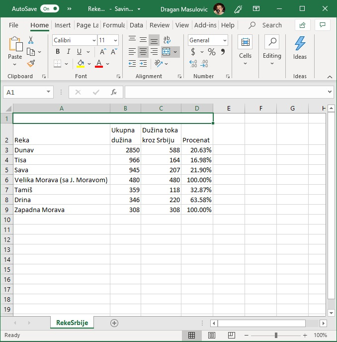{kind=link}
У нову, велику ћелију унеси текст „Najduže reke Srbije” (без наводника, наравно!):
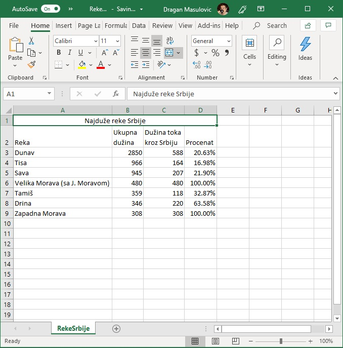{kind=link}
Корак 6. Сада ћемо мало уредити табелу. Повећај фонт наслова табеле, као стил одабери bold (ако затреба, прошири прву врсту):

Корак 7. Ћелије B2, C2, D2 поравнај по десној ивици:
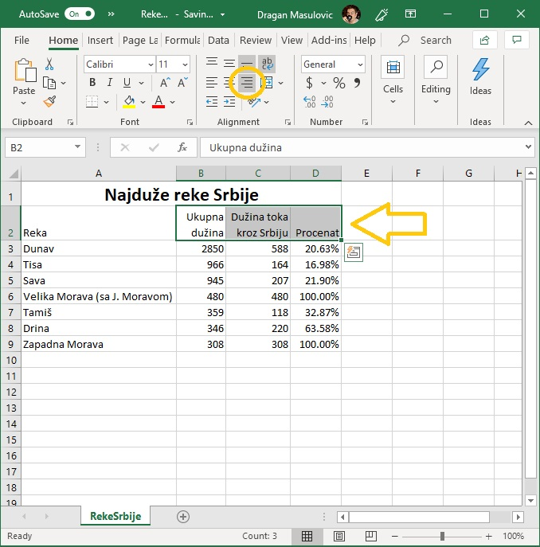{kind=link}
Корак 8. За ћелије А2:D2 одабери стил italic и центрирај њихов садржај вертикално:

Корак 9. на крају ћемо поставити оквир око табеле. Селектуј ћелије A2:D9 и из менија са оквирима одабери опцију „All Borders”:

Табела изгледа овако:

Сними је.
Штампање документа¶
Иако живимо у 21. веку, папирни документи и даље представљају незаобилазан сегмент пословне реалности. Зато сваки програм за уређивање текста, табела итд има могућност да одштампа документ.
Корак 10. Да бисмо одштампали табелу треба прво да кликнемо на „File”:

и у новом погледу који смо добили треба да кликнемо на „Print”:
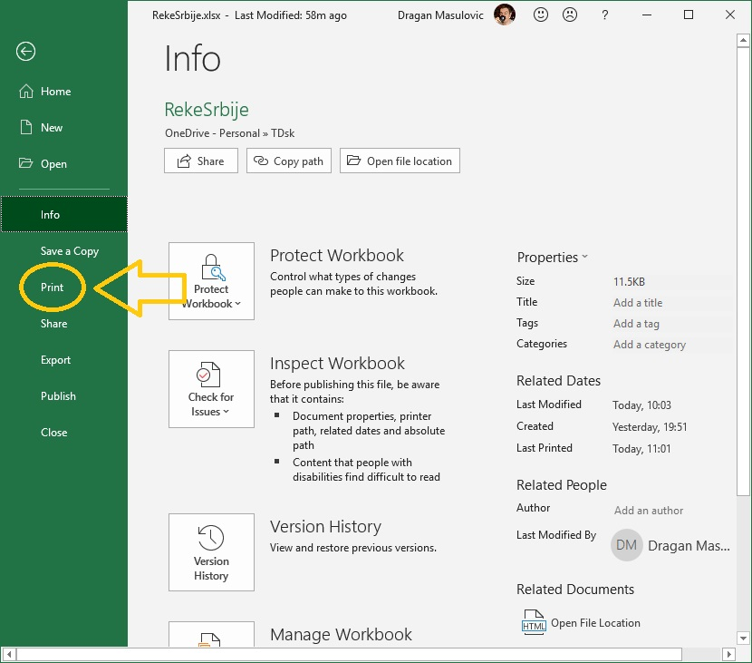{kind=link}
Тако долазимо до менија за штампање:

Са десне стране нам је приказан преглед документа: тако ће документ изгледати када се одштампа. Кликом на дугме „Print” документ шаљемо на штампу:

Овај документ ће бити одштампан у једном примерку („Copies: 1”) на штампачу који се подразумева. Лако можемо да променимо број примерака или да документ пошаљемо на други штампач:

У делу менија који се зове „Settings” можемо да мењамо разне параметре штампе (маргине, оријентацију папира итд), а ми ћемо детаљно причати само о једном – параметру који одређује формат папира:

Стандардни формат папира за штампање у Европи, па и у Србији као држави европског културног простора, се зове А4. Његове димензије су 210мм x 297мм. (Ако те занима зашто се баш тако зове и зашто су баш те димензије потражи на интернету „формати папира” или „ДИН А формат”). С друге стране, у Северној Америци, одакле нам долазе сви програми, стандардни формат за штампање се зове „Letter” и његове димензије су 8,5” x 11” (што је 215,9 мм x 279,4 мм). Дакле, формат „Letter” је дежмекастији – мало је нижи и мало шири:

Често се дешава да су након инсталације софтвера параметри подешени према америчком стандарду. Уколико је то случај, треба променити формат папира. Довољно је кликнути на стрелицу поред имена формата и одабрати жељени формат:

Снимање документа у ПДФ формату¶
ПДФ (PDF) је скраћеница од Protable Document Format, што значи „преносни формат за документе”. Он омогућује да се документ који је направљен на једном рачунару отвори, чита и штампа на било ком другом рачунару независно од произвођача рачунара, независно од оперативног система под којим рачунар ради, и независно од тога колико је стар рачунар.
На пример, документ направљен на персоналном рачунару (PC) који ради под оперативним системом Windows 10 може да се отвори и прочита на рачунару који ради под оперативним системом Linux, или на лаптопу који ради под оперативним системом macOS, или на мобилном телефону који ради под оперативним системом Android, или на таблет рачунару који ради под оперативним системом iOS. И обрнуто: ПДФ документ који је направљен на таблет рачунару који ради под оперативним системом iOS може без проблема да се прочита и одштампа на персоналном рачунару који ради под оперативним системом Windows 10.
Цена коју плаћамо за универзалност ПДФ формата је чињеница да ПДФ документ не може да се мења! Зато је веома важно запамтити следеће: ако сте ПДФ документ направили од неког другог документа, рецимо од Ексел табеле, увек морате сачувати и полазни документ (Ексел табелу)! Ексел не може да учита ПДФ документ и да на њему врши измене. Ако је потребно нешто променити, измене извршимо у оригиналном документу, рецимо Ексел табели, и онда поново од њега направимо ПДФ.
И поред овог ограничења, ПДФ је данас постао de facto стандард за размену докумената. Ако некоме треба да пошаљете неке документе, а није унапред договорено у ком формату се шаљу документи, принципи дигиталне етикеције налажу да се у том случају шаље искључиво ПДФ верзија документа. Разлог је једноставан: да би неко могао да прочита, рецимо, Ексел фајл, мора да купи одговарајући софтвер. За ПДФ, међутим, постоје бесплатни читачи за све врсте дигиталних уређаја које су икада направљене.
Да бисмо претходни документ снимили у ПДФ формату треба да кликнемо на „File”:
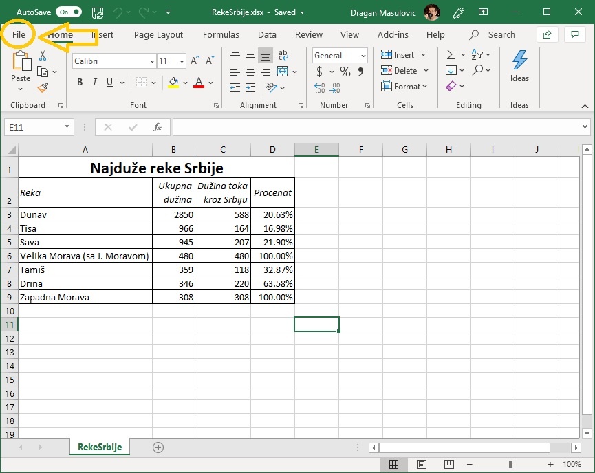{kind=link}
потом одаберемо „Save a copy” (енгл. „сачувај копију”):

онда кликнемо на стрелицу поред формата документа како бисмо добили (огромну!) листу свих расположивих формата које Ексел подржава, и одаберемо формат ПДФ:
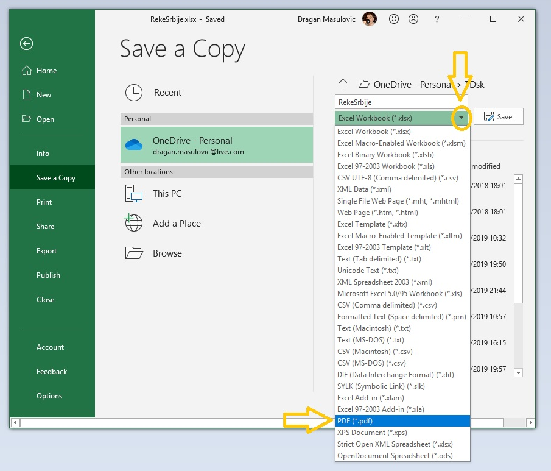{kind=link}
На крају кликнемо на „Save”:

Ако ПДФ документ отворимо из неког програма за преглед ПДФ докумената видећемо нешто слично овоме:
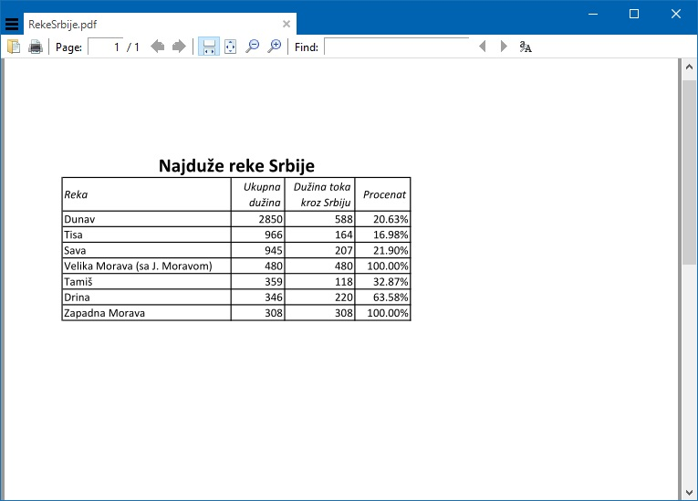{kind=link}
Задаци¶
Задатак 1. Са следећег линка Remember.xlsx преузми датотеку која садржи (будућу) плеј-листу.
За сваку нумеру унеси трајање и одреди укупно трајање плеј-листе. Улепшај табелу и сними је као Ексел фајл и као ПДФ фајл.
Задатак 2. Са следећег линка StanovnistvoSrbije2017.xlsx преузми датотеку која садржи податке о броју становника Србије у 2017. години по годинама старости.
Додај табели три колоне:
Ukupno
Procenat M
Procenat Ž
У свакој врсти табеле (дакле, за сваки узраст за који у табели постоје подаци) одреди укупан број становника тог узраста, као и проценат припадника мушког и женског пола.
Улепшај табелу и сними је као Ексел фајл и као ПДФ фајл.